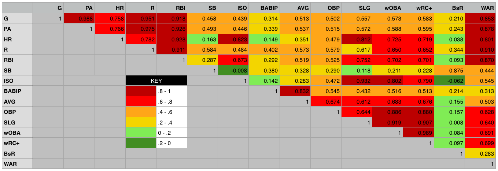

MLB Hall of Fame Predictor
Northwestern University, EECS 349
Instructor Bryan Pardo
Elliott Evans
elliottevans2015@u.northwestern.edu
Jon Ford
jonford2015@u.northwestern.edu
Corey McMahon
coreymcmahon2015@u.northwestern.edu
Overview
Come election time for the Major League Baseball Hall of Fame, various players, commentators and writers, attempt to predict who will and will not gain entry. The desire for knowledge about whether or not a player will be inducted comes from multiple angles. Fans want to know if their favorite players are going to make the Hall or not. Writers often write articles predicting the voting outcomes and are judged more favorably if they are consistently accurate. Teams themselves have financial stake in the matter; if a former superstar is inducted, special Hall of Fame jerseys can be sold. For each of these groups of people, a system that could accurately predict whether or not a given player will make the hall of fame would be extremely useful.
We have chosen to build a system that, given the lifetime statistics of a Major League Baseball position player, predicts whether or not that position player will be inducted into the Hall of Fame. To do this, our learner uses past player statistics (obtained from Fangraphs) to create Gaussian distribution functions for both Hall of Famers and non-Hall of Famers. The fewer players that our system misclassifies, the better it has become.
Legendary Hall of Famer Joe DiMaggio
Data Set
We obtained our data set from Fangraphs, a website that keeps advanced baseball statistics. Our data set contains career statistics of every player that played any part of his major league career between the years 1974 and 1984, inclusive. The data we used contains 15 statistics in particular: G, PA, HR, R, RBI, SB, ISO, BABIP, AVG, OBP, SLG, wOBA, wRC+, BsR, and WAR (definitions for all of which can be found at the Fangraphs Library Stat Glossary). In total, this data set contains data for 483 players, 29 of whom are in the Hall of Fame.
The reason for the selection of these particular years (1974-1984) is a pragmatic one. A player with a long career that ended in 1974 began his career in the late 1950s or later. If we included earlier players, their statistics, very different because of how far removed from the present it is, would change the model in a negative way. A player whose career began in 1984, would have a career that ended by the early 2000s and is therefore 10 years removed from playing, and therefore eligble for the Hall of Fame, per the Baseball Writers' Association of America's Hall of Fame elibility rules.

Sample data from our data set, provided by Fangraphs.
Methodology
Our system works in two parts, training and validation. To train, it takes players with known classifications, some in the Hall of Fame class, others in the non-Hall of Fame class, whom we will refer to as Hall of Famers and Scrubs, respectively. We choose some of the above statistics on which we want to train, which could be some or all of them. The training data is split between the classes and the mean and covariance matrix of the desired statistics are computed. Finally, for each class, a multi-dimensional Gaussian distribution function is created.
To validate, a separate set of players is supplied. The players statistics are plugged into the Gaussian distribution functions for each classification. Using both functions, if we find that the probability of a player belonging to the HOF class is greater than the probability of him belonging to the Scrub class then he is classified as a Hall-of-Famer, otherwise he is a Scrub.
The baseline approach against which we compare our system is the assumption that the probability of a player making the Hall of Fame is .062 (or the proportion of Hall-of-Famers in our training set) and the probability of a player not making the Hall of Fame is therefore .938. The baseline will classify a player based on which probability is greateer meaning it will classify every player as a Scrub and will have an error rate of .062.
Process & Results
The performance of our Hall of Fame predictor varies greatly depending on which statistics are used. When used in isolation, the performance of the statistics varies from an error rate of .269 when using BABIP to an error rate of .094 when using WAR. This is relatively intuitive, as BABIP is not reflective of overall performance, while the entire purpose of the WAR statistic is to encompass overall performance. Overall, no individual statistic performed as well as the baseline approach.
Combining statistics for greater accuracy
Better performance can be achieved through the use of multiple statistics. The question then becomes which combinations of statistics yields the best results. The best possible combination would be statistics that perform well on their own and are relatively uncorrelated - that is, they tell us different things about a player's ability and therfore probability of being inducted into the Hall of Fame. The above graph shows isolated performance of the individual statistics. The graph below shows us the correlation of the various statistics.
The best possible combination would be statistics that perform well on their own and are relatively uncorrelated - that is, they tell us different things about a player's ability and therfore probability of being inducted into the Hall of Fame.
Correlation matrix for various baseball statistics
Using this information, we determined that the model with the best possible predictive power would use the statistics WAR and BsR. This outperforms the other combinations of statistics that we tested together due to their historical importance or because of their favor among baseball statisticians.
The triple crown statistics of AVG, HR and RBI perform very poorly, which is somewhat surprising given that the baseball media, who comprise the voters for the Hall of Fame treat these statistics with such importance. WAR alone was the best individual statistic, but is improved further when combined with the baserunning statistic BsR, which also performed well and is not strongly correlated with WAR, and also with wRC+ which, among offensive statistics, was least correlated with WAR.
Alas, no combination of statistics was able to outperform the baseline.
Adding weights
We found that most of the error in our model was coming from classifying too many scrubs as Hall of Famers, rather than vice-versa.
To address this, we decided to create a weight variable, in the hopes that we could make our model a bit more selective as to which players it classified as Hall of Famers. The weight used by our model for a given combination of statistics is not arbitrary. For every fold, it is determined to be the weight that causes the least misclassifications on the training set.
The Final Model
With the use of weighting and statistical combinations, our system was able to beat the baseline approach.
The addition of weights changed various combinations of statistics differently. The triple crown statistics improved dramatically with the addition of weights, to about on par with the baseline approach. WAR, by itself, performed far worse. The combination of WAR, BsR and wRC+ remained the best, and with an error rate of .0545, exceeded the baseline approach by three quarters of a percent.
Conclusions
This research has shed light on the difficulty of predicting what players will or will not make the Hall of Fame. We attribute this difficulty to a pair of reasons:
-
There is no clear division between Hall of Famers and scrubs. There are players like Lou Whitaker, clearly deserving of induction, or at least consideration, who do not. Whitaker failed to garner even 5% of the vote despite strong numbers in his 18 year career. There are also many players who have been inducted even though their stat lines would suggest they don't belong in the Hall of Fame.
-
Voters include other factors beyond a player's career statistics. Some of the other criteria used by voters are statistically-based, such as how a player performed specifically at the peak of his career. Other criteria, however, are not easily quantified, such as a player's reputation among fellow players and sportwriters or whether or not a player was ever implicated in a controversy involving the use of banned, performance-enhancing drugs. Some also claim a bias for players of certain teams or eras. Improvements to our model would look to include more of this information.
Those difficulties aside, we were pleased that our model was able to perform as well as it could. Our model's performance suggests that, despite the grievences of some fans and writers, the strongest underlying factor of a player's chance remains his career statistics and the other factors tend to affect players around the margins.
Our model's predictions for the Baseball Hall of Fame class of 2014*
| Player | Classification |
|---|---|
| Craig Biggio | Hall of Famer |
| Jeff Bagwell | Hall of Famer |
| Mike Piazza | Scrub |
| Tim Raines | Scrub |
| Barry Bonds** | Scrub |
| Edgar Martinez | Scrub |
| Larry Walker | Hall of Famer |
| Fred McGriff | Scrub |
| Mark McGwire | Hall of Famer |
| Sammy Sosa | Scrub |
| Rafael Palmeiro | Scrub |
| Frank Thomas | Scrub |
| Jeff Kent | Scrub |
* This application, while fun, is not very sound. Our model is trained on data from previous decades. Baseball data varies over time (especially so for this year's class, which contains many players from the steroid era), so the model is trained on a substantially different population than this year's Hall of Fame class.
** Barry Bonds classification as a scrub details a weakness of our model not previously apparent. Outliers on the very positive end of the spectrum (like Bonds, who has arguably the best statistics of any player ever) will often be classified as scrubs. This is because the Gaussian model at that point is approaching 0 for both classifications, and the weighting leads such outliers to be classified as scrubs.